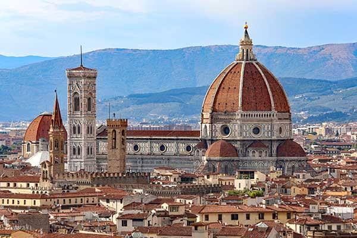
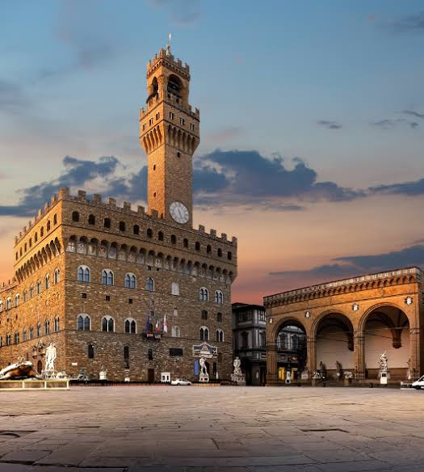

🇪🇸 Barcelone, Espagne
Météo actuelle
Chargement de la météo...
Informations générales
Pays:
Espagne
Région:
Catalogne
Population:
~1.6 million d'habitants
Langue:
Catalan et Espagnol
Monnaie:
Euro (€)
Attractions principales
Sagrada Família - Chef-d'œuvre de Gaudí
Park Güell - Parc architectural coloré
Casa Batlló - Architecture moderniste
La Rambla - Avenue emblématique
Plage de Barceloneta
Camp Nou - Stade du FC Barcelona
Gastronomie
Paella - Plat de riz traditionnel
Tapas - Petites portions variées
Crema Catalana - Dessert emblématique
Jamón ibérico - Jambon cru de qualité
Conseils de voyage
Réservez les billets pour la Sagrada Família à l'avance
Utilisez le métro pour vous déplacer facilement
Meilleure période: Mars-Mai et Septembre-Novembre
Attention aux pickpockets dans les zones touristiques